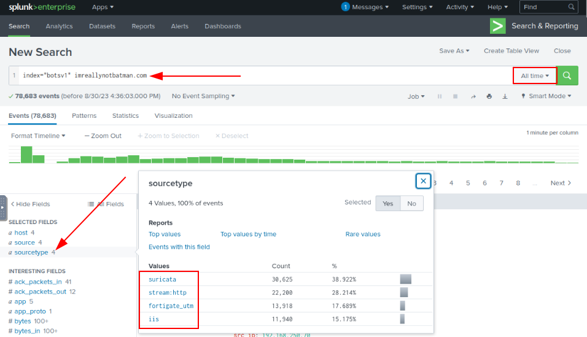
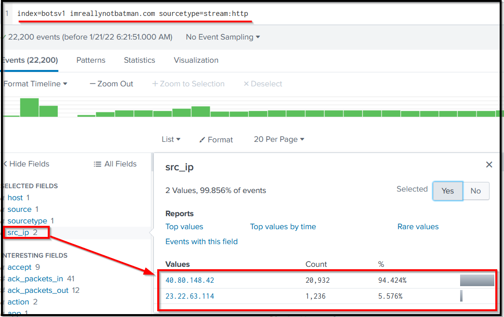
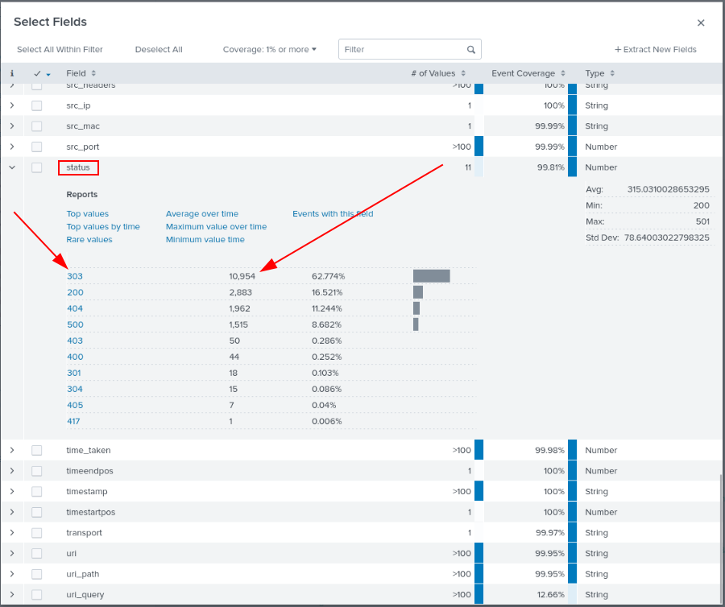
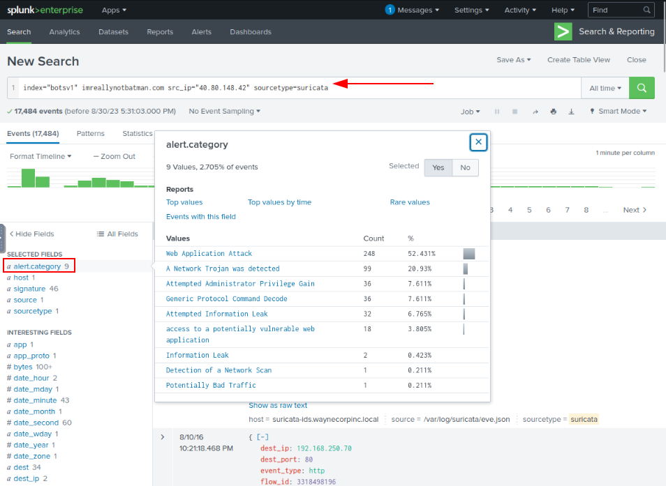
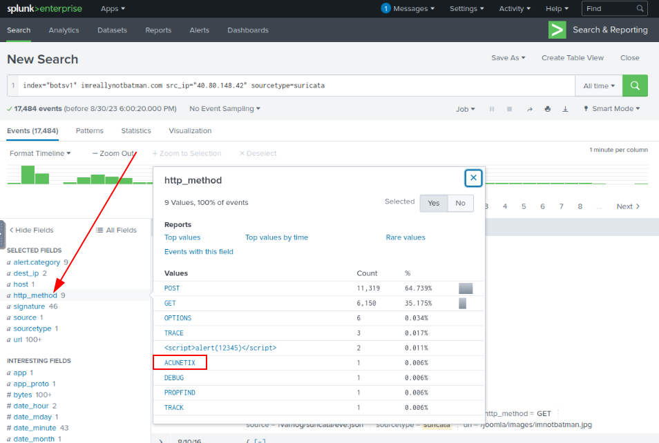
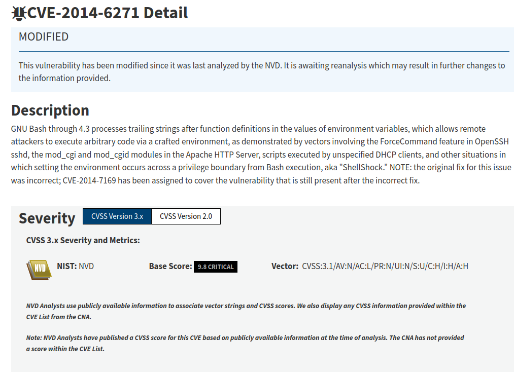
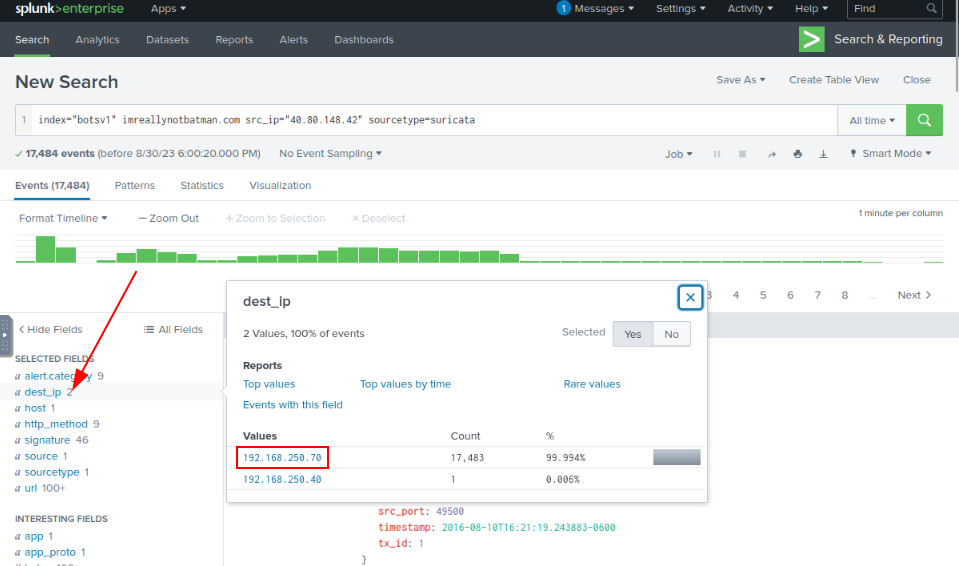
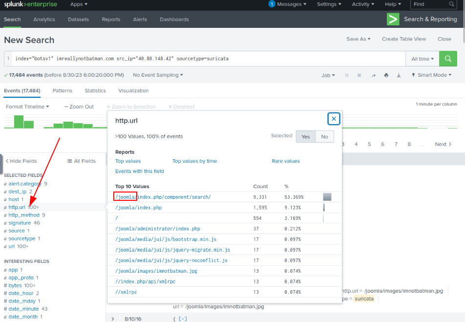

We will start our analysis by examining any reconnaissance attempt against the webserver imreallynotbatman.com. From an analyst perspective, where do we first need to look? If we look at the available log sources, we will find some log sources covering the network traffic, which means all the inbound communication towards our web server will be logged into the log source that contains the web traffic. Let's start by searching for the domain in the search head and see which log source includes the traces of our domain.
Search Query:
index=botsv1 imreallynotbatman.com
We are going to look for the event logs in the index "botsv1" which contains the term imreallynotbatman.com

Here we have searched for the term imreallynotbatman.com in the index "botsv1". In the sourcetype field, we saw that the following log sources contain the traces of this search term.
• Suricata
• stream:http
• fortigate_utm
• iis
From the name of these log sources, it is clear what each log source may contain. Every analyst may have a different approach to investigating a scenario. Our first task is to identify the IP address attempting to perform reconnaissance activity on our web server. It would be obvious to look at the web traffic coming into the network. We can start looking into any of the logs mentioned above sources.
Let us begin looking at the log source stream:http, which contains the http traffic logs, and examine the src_ip field from the left panel. Src_ip field contains the source IP address it finds in the logs.
Search Query:
index=botsv1 imreallynotbatman.com sourcetype=stream:http

{kind=link}
So far, we have found two IPs in the src_ip field 40.80.148.42 and 23.22.63.114. The first IP seems to contain a high percentage of the logs as compared to the other IP, which could be the answer. Being eficient with my time is also part of the job so we will attack the most probable malicious IP Address.
To further confirm our suspicion about the IP address 40.80.148.42, click on the IP and examine the logs. We can look at the interesting fields like User-Agent, Post request, URIs, etc., to see what kind of traffic is coming from this particular IP.
Search Query:
index="botsv1" imreallynotbatman.com sourcetype="stream:http" src_ip="40.80.148.42"

After conducting some research, I discovered that this particular IP address is generating a significant number of HTTP 303 errors. The HTTP 303 status code is a response code that signals the requested resource has been replaced with a different one. This code is frequently employed to redirect a client to an alternate URL or resource, often in response to a POST request. Meaning, It's possible that an IP address generating a significant number of 303 HTTP responses could be engaged in reconnaissance activities. Reconnaissance is a common phase in the cyber attack lifecycle where attackers gather information about a target to identify potential vulnerabilities and plan their next steps.
Verify whether the IP address is conducting scanning activities:
So what do we need to do to validate the scanning attempt? We can leverage Suricata logs, and see if any rule is triggered on this communication.
Search Query:
index="botsv1" imreallynotbatman.com src_ip="40.80.148.42" sourcetype=suricata

We have included "alert.category" and "signature" as selected fields. Above is shown "alert.category", and oh boy, “Web Aplication Attack”, “Attempted Administrator Privilege Gain”, “Information Leak”. This can start to become overwhelming really quick, but let's take this step by step. So what do we do? We collect more information.
First, based on the information provided above, we are aware that a network scan has been detected. Therefore, our next step is to determine the type of scanner that was utilized.

“Acunetix” is an automated web application security testing tool that audits your web applications by checking for vulnerabilities like SQL Injection, Cross site scripting and other exploitable vulnerabilities.
From the “signature” field we get to know what vulnerability did the attacker attempted to exploit.

CVE-2014-6271

To obtain a more comprehensive view, we need to identify the IP address of our server and determine the Content Management System (CMS) it is using.
By utilizing Splunk's fields, we can efficiently identify the IP addresses that the attacker attempted to connect to, which will provide us with the IP address of the server.

Now, for content management systems (CMS), we can examine the HTTP requests made by the attacker, and we should be able to locate it.

We first looked at any reconnaissance activity from the attacker to identify the IP address and other details about the adversary
Findings:
• Attacker IP: 40.80.148.42
• Scanner: Acunetix
• Vulnerability: CVE-2014-6271
• CMS: Joomla
• Server IP: 192.168.250.70